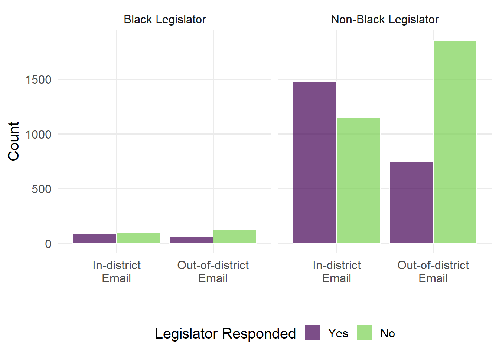
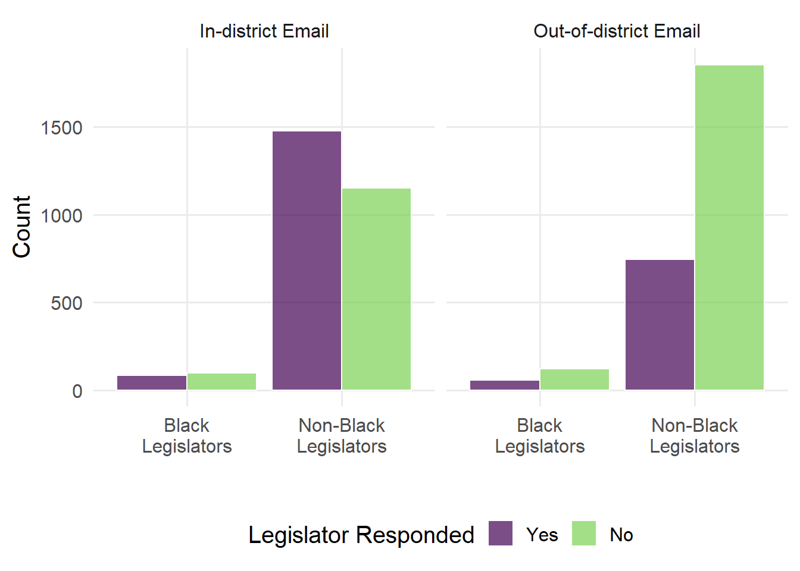
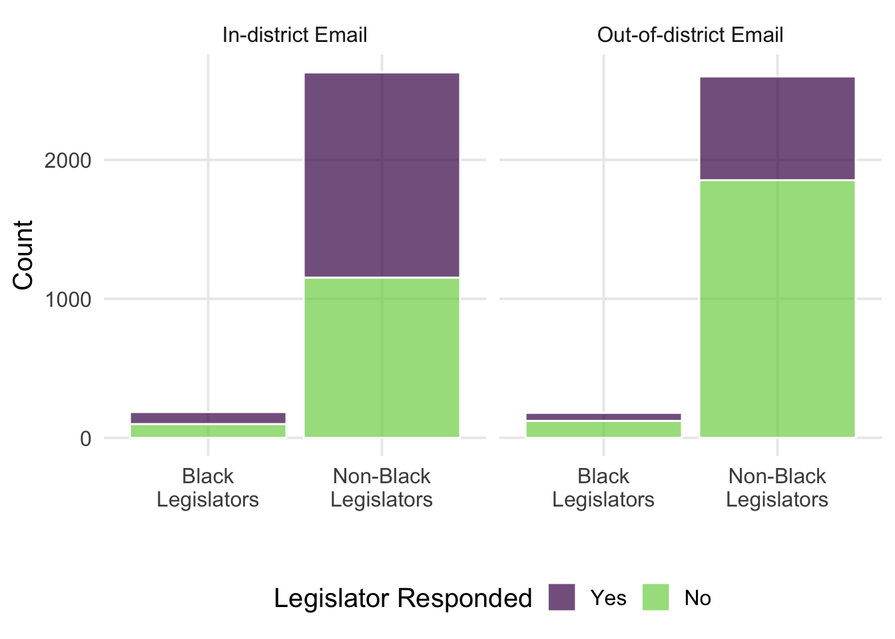
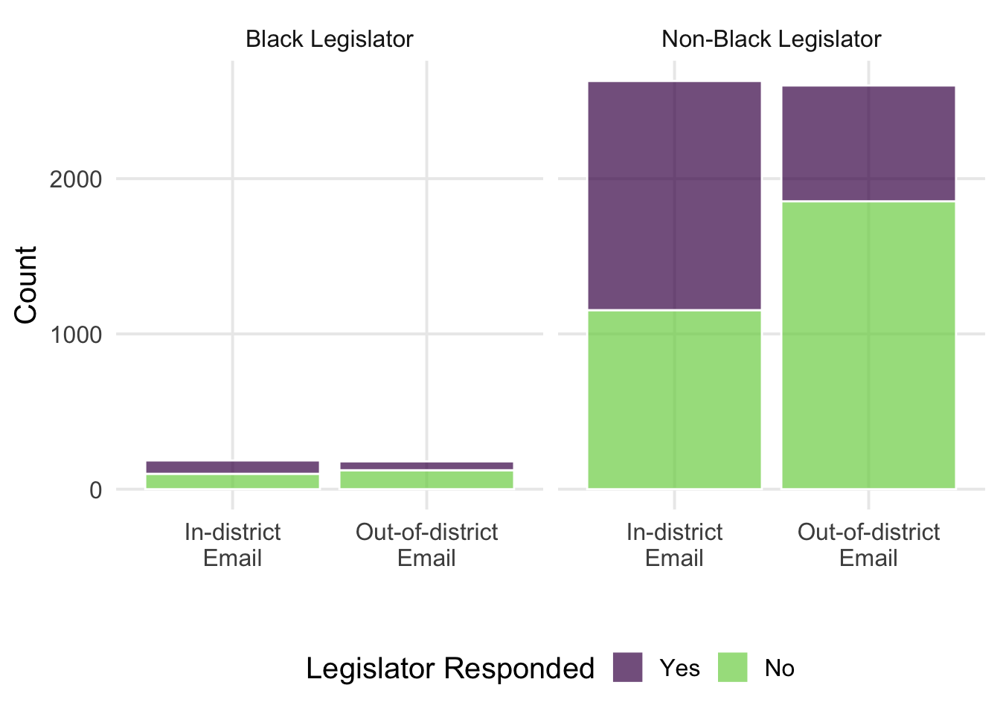
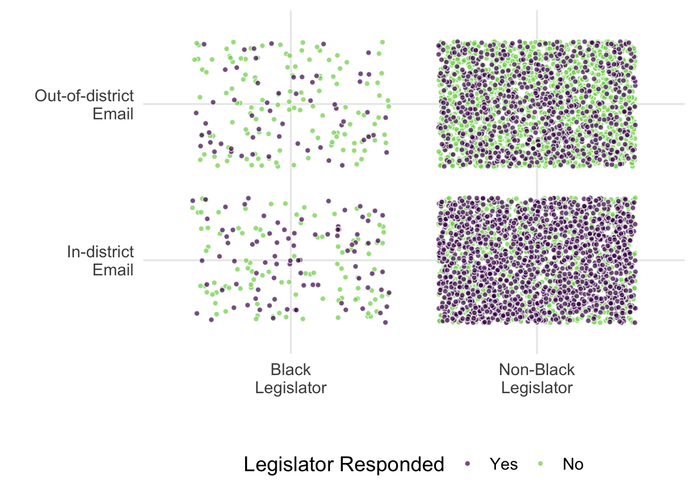

Problem Set 10: Suggested Solutions
Dataset
We will work with the data from the following article and try to replicate the analysis that the author conducted there:
Broockman, David E. 2013. “Black Politicians Are More Intrinsically Motivated to Advance Blacks’ Interests: A Field Experiment Manipulating Political Incentives.” American Journal of Political Science 57 (3): 521–36.
Here is the abstract from the study:
Why are politicians more likely to advance the interests of those of their race? I present a field experiment demonstrating that black politicians are more intrinsically motivated to advance blacks’ interests than are their counterparts. Guided by elite interviews, I emailed 6,928 U.S. state legislators from a putatively black alias asking for help signing up for state unemployment benefits. Crucially, I varied the legislators’ political incentive to respond by randomizing whether the sender purported to live within or far from each legislator’s district. While nonblack legislators were markedly less likely to respond when their political incentives to do so were diminished, black legislators typically continued to respond even when doing so promised little political reward. Black legislators thus appear substantially more intrinsically motivated to advance blacks’ interests. As political decision making is often difficult for voters to observe, intrinsically motivated descriptive representatives play a crucial role in advancing minorities’ political interests.
| Variable | Description |
|---|---|
leg_black |
Legislator receiving email is Black |
treat_out |
Email is from out-of-district |
responded |
Legislator responded to email |
totalpop |
District population |
medianhhincom |
District median household income |
black_medianhh |
District median household income among Black people |
white_medianhh |
District median household income among White people |
blackpercent |
Percentage of district that is Black |
statessquireindex |
State’s Squire index |
nonblacknonwhite |
Legislator receiving email is neither Black nor White |
urbanpercent |
Percentage of district that is urban |
leg_senator |
Legislator receiving email is a senator |
leg_democrat |
Legislator receiving email is in the Democratic party |
south |
Legislator receiving email is in the Southern United States |
Task 1: DAG
Normally in (field) experiments, the variable(s) manipulated/randomized by researchers is(are) called the treatment variable(s). Here, we will be referring to treatment variables in the context of matching, i.e. the predictor that is not randomly distributed but for which we would like to mimic the randomization. In other words, the variables which we are matching on.
Below you can find a DAG that depicts the relationship between the “treatment” variable, leg_black, and the responded, the outcome variable as well as number of confounders to this relationship. The field experiment, however, included sending emails to legislators, randomizing between the messages from in- and out-of-district. Add this variable to the DAG. You can adapt the DAG below or add the one made with daggify.net.
The fact that email was in/out-of-district was randomly assigned by the researcher, so it does not open any backdoors.
Task 2: Explore the Dataset
- Generate a plot representing the data on legislator response rates (
responded) for black vs. non-black legislators over the type of emails they received. Comment on the plot in 2-3 sentences.
Code
black_politicians %>%
count(leg_black, treat_out, responded) %>%
ggplot(
aes(
x = if_else(treat_out == 1, "Out-of-district\nEmail", "In-district\nEmail"),
y = n,
fill = if_else(responded == 1, "Yes", "No") %>% as_factor() %>% fct_rev()
)
) +
geom_col(alpha = 0.7, position = position_dodge(), color = "white", ) +
facet_grid(. ~ if_else(leg_black == 1, "Black Legislator", "Non-Black Legislator")) +
scale_fill_viridis_d(end = 0.8) +
scale_color_viridis_d(end = 0.8) +
labs(
fill = "Legislator Responded",
x = "",
y = "Count",
fill = "",
color = ""
) +
theme(legend.position = "bottom")
Code
black_politicians %>%
count(leg_black, treat_out, responded) %>%
ggplot(
aes(
x = if_else(leg_black == 1, "Black\nLegislators", "Non-Black\nLegislators"),
y = n,
fill = if_else(responded == 1, "Yes", "No") %>% as_factor() %>% fct_rev()
)
) +
geom_col(alpha = 0.7, position = position_dodge(), color = "white", ) +
facet_grid(. ~ if_else(treat_out == 1, "Out-of-district Email", "In-district Email")) +
scale_fill_viridis_d(end = 0.8) +
scale_color_viridis_d(end = 0.8) +
labs(
fill = "Legislator Responded",
x = "",
y = "Count",
fill = "",
color = ""
) +
theme(legend.position = "bottom")
Code
black_politicians %>%
count(leg_black, treat_out, responded) %>%
ggplot(
aes(
x = if_else(leg_black == 1, "Black\nLegislators", "Non-Black\nLegislators"),
y = n,
fill = if_else(responded == 1, "Yes", "No") %>% as_factor() %>% fct_rev()
)
) +
geom_col(alpha = 0.7, position = position_stack(), color = "white", ) +
facet_grid(. ~ if_else(treat_out == 1, "Out-of-district Email", "In-district Email")) +
scale_fill_viridis_d(end = 0.8) +
scale_color_viridis_d(end = 0.8) +
labs(
fill = "Legislator Responded",
x = "",
y = "Count",
fill = "",
color = ""
) +
theme(legend.position = "bottom")
Code
black_politicians %>%
count(leg_black, treat_out, responded) %>%
ggplot(
aes(
x = if_else(treat_out == 1, "Out-of-district\nEmail", "In-district\nEmail"),
y = n,
fill = if_else(responded == 1, "Yes", "No") %>% as_factor() %>% fct_rev()
)
) +
geom_col(alpha = 0.7, position = position_stack(), color = "white", ) +
facet_grid(. ~ if_else(leg_black == 1, "Black Legislator", "Non-Black Legislator")) +
scale_fill_viridis_d(end = 0.8) +
scale_color_viridis_d(end = 0.8) +
labs(
fill = "Legislator Responded",
x = "",
y = "Count",
fill = "",
color = ""
) +
theme(legend.position = "bottom")
Code
ggplot(
black_politicians %>%
arrange(responded),
aes(
x = if_else(leg_black == 1, "Black\nLegislator", "Non-Black\nLegislator"),
y = if_else(treat_out == 1, "Out-of-district\nEmail", "In-district\nEmail"),
fill = if_else(responded == 1, "Yes", "No") %>% as.factor() %>% fct_rev()
)
) +
geom_jitter(alpha = 0.7, pch = 21, color = "white", size = 1.5) +
scale_fill_viridis_d(end = 0.8) +
labs(
fill = "Legislator Responded",
x = "",
y = ""
) +
theme(legend.position = "bottom")
From all of these plot (to a varying extent), we can observe a few things: first, there are far more non-black legislators, in general and within both experimental treatment groups. This is evident from all types of plots, although bar plots give us exact numbers, unlike the raw data ones. As for the randomized treatment, in- vs. out-of-district email, stacked bar plots show us clearly that experimental treatment groups were of equal sizes. Coming to the response rates, we can spot that for both black and non-black legislators, the response to in-district email was more likely in comparison to an out-of-district email. However, for black legislators the difference in the response rate between treatment conditions seems to be smaller than for non-black legislators.
- Run a linear regression model to explore if black legislators are more likely to respond to emails from out-of-district vs. in-district ones in comparison to non-black legislators. Control for the legislator party, senator status, South, and other available sociodemographic characteristics for the districts. You can print out the output with
summary()for this task. Comment on the findings:
- How responsive were legislators when their political incentives were decreased?
- How did the effect of decreasing legislators’ political incentives vary between legislators of different race?
m1 <- lm(
responded ~ leg_black * treat_out + nonblacknonwhite + black_medianhh +
white_medianhh + statessquireindex + totalpop + urbanpercent +
medianhhincom + blackpercent + leg_democrat,
data = black_politicians
)
summary(m1)
Call:
lm(formula = responded ~ leg_black * treat_out + nonblacknonwhite +
black_medianhh + white_medianhh + statessquireindex + totalpop +
urbanpercent + medianhhincom + blackpercent + leg_democrat,
data = black_politicians)
Residuals:
Min 1Q Median 3Q Max
-0.7482 -0.3711 -0.2445 0.4566 0.8726
Coefficients:
Estimate Std. Error t value Pr(>|t|)
(Intercept) 0.4661291 0.0252500 18.461 < 2e-16 ***
leg_black -0.1140716 0.0449939 -2.535 0.011263 *
treat_out -0.2755611 0.0130894 -21.052 < 2e-16 ***
nonblacknonwhite -0.0382547 0.0309062 -1.238 0.215854
black_medianhh -0.0015864 0.0072346 -0.219 0.826443
white_medianhh 0.0162761 0.0149473 1.089 0.276247
statessquireindex 0.4034100 0.0667769 6.041 1.63e-09 ***
totalpop -0.0016359 0.0007579 -2.159 0.030927 *
urbanpercent 0.0146757 0.0235744 0.623 0.533620
medianhhincom 0.0022886 0.0083705 0.273 0.784545
blackpercent 0.0764460 0.0625127 1.223 0.221424
leg_democrat -0.0493432 0.0138265 -3.569 0.000362 ***
leg_black:treat_out 0.1288274 0.0513152 2.511 0.012084 *
---
Signif. codes: 0 '***' 0.001 '**' 0.01 '*' 0.05 '.' 0.1 ' ' 1
Residual standard error: 0.473 on 5580 degrees of freedom
Multiple R-squared: 0.08528, Adjusted R-squared: 0.08331
F-statistic: 43.35 on 12 and 5580 DF, p-value: < 2.2e-16With decreased political incentives, i.e. when an email came outside of the district of the candidate, both types of legislators were less likely to respond: holding all else constant, for non-black candidates the probability decreased by on average 0.28 points, while for black legislators the decrease was not as strong, on average 0.15 points. Technically, the positive sign of the interaction term showed us that the negative effect of treatment was mitigated by race to a certain extent.
- Why could the non-random distribution of race variable be problematic for the analysis? How does matching address this issue?
The race of the elected candidate is not randomly distributed across districts. The fact that many nonblack legislators represent districts where blacks would be unlikely to get elected and/or would be unlikely to run thus constitutes a selection bias. Legislators from districts with modest black representation might have been suspicious of a letter from a putatively black individual or less knowledgeable about unemployment benefits, hence making them less likely to respond to such an email. Matching potentially removes this variation between districts by ensuring that the districts are comparable to one another based on a set of matching variables. Ideally, these matching variables should account for potential differences in response rates.
Task 3: Exact Matching
- When using matching for preprocessing, we need to disregard the dependent variable, thus we will only be working with treatment and matching variables at this stage. Look at the plot below, which shows the data across all three matching variables and points are colored by the values of the treatment variable. What do you observe regarding the distribution of the treatment variable
leg_blackacross the three matching variables?

There are many more blacks among Democratic in comparison to Republican legislators. We are also much more likely to see a black candidate where the share of black legislators is higher, and median household income is lower. We can also see that there are many cases where for a combination of matching variables, only districts with one kind of race exist. This shows that there is some overlap between the joint distributions of the variables, but the common support is not very large. Hence finding, say, an exact match would not be easy.
- Apply the exact matching algorithm to the dataset, and match based on the values of legislator race variable. Store the dataset in
exact_dfobject.
# matchit object
exact <-
matchit(
leg_black ~ medianhhincom + blackpercent + leg_democrat,
data = black_politicians %>%
arrange(blackpercent),
method = "exact"
)
# resulting dataset
exact_df <- exact %>% match.data()- Explore the visualized distribution over matching variables for the matched dataset. The size of the points represents the ratio between the number of treated units to untreated ones within each unique combination of values, subgroup. What do you observe from this plot:
- what changes in the distribution of the variables in comparison to the raw data?
- to what extent do the distributions within treated and untreated groups overlap, in comparison to raw data?
Code
ggplot(
exact_df %>%
group_by(subclass) %>%
mutate(n = if_else(
leg_black == 1,
1,
sum(leg_black == 1) / sum(leg_black == 0)
),
leg_black = if_else(leg_black == 1, "Black", "Non-black") %>% as_factor()) %>%
arrange(leg_black, n),
aes(
medianhhincom,
blackpercent,
fill = factor(leg_black),
size = n
)
) +
geom_jitter(
alpha = 0.7,
pch = 21,
color = "grey80",
width = 0.1,
height = 0.01
) +
scale_fill_viridis_d(end = 0.8) +
facet_wrap(vars(leg_party)) +
labs(
fill = "Legislator Race",
size = "Units in Subgroup",
y = "Share of Black Voters in District",
x = "Median Household Income in District"
) +
theme(
legend.position = "bottom",
legend.box = "vertical"
)
By definition of the procedure, we are looking for exact matches for combinations of matching variables between treated and untreated units (
geom_jitteradds a bit of random noise to help with overlap), hence there is perfect overlap between the distributions. In comparison to raw data, we also have much fewer points. There are no exact matches for Republican legislators, but among Democrats, we could find 68 observations: 27 of them are black and 41 are non-black. For some combinations of matching variables, there was more than one matched non-black legislator per one black legislator. On the plot, these are subgroups with a big purple point and a a few smaller green ones. Also, sometimes there were multiple black legislators with the same combination of values in matching variables matched to one non-black legislator. On the plot, these are subgroups with bigger green points and few green ones.
- What can you say about the covariate balance in this matched dataset? Construct the covariate balance plot if you need to answer this question.
By definition of the procedure, covariate balance is perfect in this case, as the observations match perfectly on the values of matching variables.
Task 4: Nearest Neghbor Matching
- Let’s try out a different matching algorithm: nearest neighbor matching with Mahalanobis distance. In a few sentences, explain what is the logic underlying this matching algorithm.
Unlike exact matching, this approach quantifies the differences between observations in terms of distance estimated based on the values of matching variables. There are different distance measures one can use, but the Mahalanobis distance accounts for the correlation in the data and allows it to, in essence, not match on highly correlated variables more than once. Computationally, the algorithm does the following: A distance is computed between each treated unit and each control unit, and, one by one, each treated unit is assigned a control unit as a match. When matching without replacement, the matched untreated unit can no longer be matched to other observations. The matching is thus “greedy” in the sense that there is no action taken to optimize an overall criterion; each match is selected without considering the other matches that may occur subsequently. It is thus fast but sensitive to the order of samples (unless sampled with replacement, in which case more than one control observation can be matched to a treated unit). Optimal matching, another type of matching, on the other hand, minimizes the total distance across all pairs, not individual distances, but it also takes longer to work.
- Now implement the algorithm. Explore if the ordering of observations makes a difference when you match without replacement. Compare the original order vs. order by
blackpercent(arrange()function can help). Compare the resulting datasets withsetdiff()orintersect().
Code
# matchit object
nearest <-
matchit(
leg_black ~ medianhhincom + blackpercent + leg_democrat,
data = black_politicians,
method = "nearest",
distance = "mahalanobis", replace = F
)
nearest_ordered <-
matchit(
leg_black ~ medianhhincom + blackpercent + leg_democrat,
data = black_politicians %>%
arrange(blackpercent),
method = "nearest",
distance = "mahalanobis", replace = F
)
# resulting dataset
nearest_df <- nearest %>% match.data()
nearest_ordered_df <- nearest_ordered %>% match.data()
# compare datasets
# nrow() of rows in nearest_df but not in nearest_ordered_df
setdiff(nearest_df %>% select(-subclass),
nearest_ordered_df %>% select(-subclass)) %>% nrow()[1] 19Code
# nrow() of rows in nearest_df but not in nearest_ordered_df and vica versa
symdiff(nearest_ordered_df %>% select(-subclass),
nearest_df %>% select(-subclass)) %>% nrow()[1] 37Code
# nrow() of rows in both nearest_df and nearest_ordered_df
intersect(nearest_df %>% select(-subclass),
nearest_ordered_df %>% select(-subclass)) %>% nrow()[1] 705Code
love.plot(nearest) + labs(title = "Original Order") +
love.plot(nearest_ordered) + labs(title = "Ordered by Race") +
plot_annotation(title = "Covariate Balance") +
plot_layout(guides = "collect") &
theme(legend.position = "bottom") Warning: Standardized mean differences and raw mean differences are present in the same plot.
Use the `stars` argument to distinguish between them and appropriately label the x-axis.
Standardized mean differences and raw mean differences are present in the same plot.
Use the `stars` argument to distinguish between them and appropriately label the x-axis.
Because of the order of observations, the datasets differ to some extent. As matching adds a column
subclassinto the dataset, it needs to be removed from the comparison. Assetdiff()shows us, there are 19 observations in thenearest_dfthat are not innearest_ordered_dfand 18 observations vice versa. There are 705 observations present in both datasets.
- What does covariate balance mean in the context of matching? Which variables would we use to assess covariate balance? E.g., do we need to access balance for main dependent variable, treatment (the variable we used to match on), the matching variables, other variables in the dataset? Why (not)?
Covariate balance is the degree to which the distribution of matching variables is similar across values of the treatment. Balance is a way to assess the quality of the resulting matches. When covariate balance is achieved, the resulting effect estimate is less sensitive to model misspecification and ideally close to the true treatment effect. We need to check covariate balance for the variables we used for matching, but not the main outcome variable as the information about the main outcome should not be affecting the matching process in any way.
- Compare the matched datasets when matching with and without replacement. Which one produces better covariate balance? Why? Generate a covariate balance plot if you need to answer this question.
nearest_replacement <-
matchit(
leg_black ~ medianhhincom + blackpercent + leg_democrat,
data = black_politicians,
method = "nearest",
distance = "mahalanobis",
replace = T
)
nearest_replacement_df <- nearest_replacement %>% match.data()
love.plot(nearest) + labs(title = "Without Replacement") +
love.plot(nearest_replacement) + labs(title = "With Replacement") +
plot_annotation(title = "Covariate Balance") +
plot_layout(guides = "collect") &
theme(legend.position = "bottom") Warning: Standardized mean differences and raw mean differences are present in the same plot.
Use the `stars` argument to distinguish between them and appropriately label the x-axis.
Standardized mean differences and raw mean differences are present in the same plot.
Use the `stars` argument to distinguish between them and appropriately label the x-axis.
Matching with replacement results in better covariate balance (i.e. the mean differences are nearly zero for adjusted samples in this case). This is because the algorithm is allowed to find the best match among untreated units, rather than discarding the observations that were already matched to something.
- Explore the distributions of matching variables for all three matching variables. What do you observe on the plots? Comment in 3-4 sentences.
Code
p1 <- bal.plot(nearest_replacement, # matchit object
var.name = "blackpercent" # name of the variable you are comparing
)
p2 <- bal.plot(nearest_replacement, # matchit object
var.name = "medianhhincom" # name of the variable you are comparing
)
p3 <- bal.plot(nearest_replacement, # matchit object
var.name = "leg_democrat" # name of the variable you are comparing
)
p1 / p2 / p3
The plots above show the results of distributional balance for NN matching with replacement. For each of the variables, we observe a strong overlap between the distributions for treated (black legislators) vs. untreated (non-black legislators) units. While the distributions do not overlap perfectly, this is still a significant improvement over the unbalanced dataset. This plot, however, does not show us their joint distributions, evaluating which would be ideal.
- Adapt the code from
exact-matching-plotchunk to show the distributions for the dataset with the best covariate balance that you have obtained so far with nearest neighbor matching. What are the differences to the same plot from exact matching? How do you explain them?
The plot shows that we were able to match many more observations than with exact matching. For instance, we now have a few observations where the legislator is Republican. The size of the points in this case corresponds to the weight that is assigned to each of the control units, as it is possible that one control unit is matched to more than one treated unit.
Code
ggplot(
nearest_replacement_df %>%
arrange(-leg_black, weights),
aes(
medianhhincom,
blackpercent,
fill = if_else(leg_black == 1, "Black", "Non-black"),
size = weights
)
) +
geom_jitter(
alpha = 0.7,
pch = 21,
color = "grey80",
width = 0.1,
height = 0.01
) +
scale_fill_viridis_d(end = 0.8) +
facet_wrap(vars(leg_party)) +
labs(
fill = "Race",
size = "Weights",
y = "Share of Black Voters in District",
x = "Median Household Income in District"
) +
theme(
legend.position = "bottom",
legend.box = "vertical"
) +
guides(size = "none")
Each treated observation has a weight of 1, while the untreated observations’ weight accounts for how many observations in the treated group it was matched to and is also normalized so that the total share of weights is equal to the number of observations in treated vs. untreated groups.
# number of treated vs. untreated units
nearest_replacement_df %>%
count(leg_black) # A tibble: 2 × 2
leg_black n
<dbl> <int>
1 0 138
2 1 364# sums of weights
nearest_replacement_df %>%
group_by(leg_black) %>%
summarize(sum(weights)) # A tibble: 2 × 2
leg_black `sum(weights)`
<dbl> <dbl>
1 0 138
2 1 364Task 5: Estimation on Matched Datasets
Finally, let’s move to the estimation part. You will now need to run the regression with the main dependent variable, i.e. whether the legislator responded to the email or not, and estimate the same model as in task 2.
- Use the matched dataset that provided you with the best covariate balance so far as well as had a reasonable number of observations. Don’t forget to include the weights argument to account for the fact that some untreated units may be in the dataset more than once! Explain your findings. Do the results hold after improving balance between the districts with and without black legislators?
m2 <- lm(
responded ~ leg_black * treat_out + nonblacknonwhite + black_medianhh + white_medianhh + statessquireindex + totalpop + urbanpercent + medianhhincom + blackpercent + leg_democrat,
data = nearest_replacement_df,
weights = weights
)
summary(m2)
Call:
lm(formula = responded ~ leg_black * treat_out + nonblacknonwhite +
black_medianhh + white_medianhh + statessquireindex + totalpop +
urbanpercent + medianhhincom + blackpercent + leg_democrat,
data = nearest_replacement_df, weights = weights)
Weighted Residuals:
Min 1Q Median 3Q Max
-1.1014 -0.3794 -0.1937 0.4745 1.3062
Coefficients:
Estimate Std. Error t value Pr(>|t|)
(Intercept) 0.571025 0.180717 3.160 0.00168 **
leg_black -0.209517 0.068367 -3.065 0.00230 **
treat_out -0.457473 0.081780 -5.594 3.7e-08 ***
nonblacknonwhite -0.237738 0.261858 -0.908 0.36439
black_medianhh 0.133707 0.122686 1.090 0.27633
white_medianhh -0.086500 0.045322 -1.909 0.05690 .
statessquireindex 0.171651 0.258290 0.665 0.50664
totalpop 0.002511 0.003233 0.777 0.43773
urbanpercent 0.120395 0.093337 1.290 0.19769
medianhhincom 0.013620 0.047110 0.289 0.77262
blackpercent 0.073421 0.121160 0.606 0.54481
leg_democrat -0.141165 0.154295 -0.915 0.36069
leg_black:treat_out 0.315802 0.095480 3.308 0.00101 **
---
Signif. codes: 0 '***' 0.001 '**' 0.01 '*' 0.05 '.' 0.1 ' ' 1
Residual standard error: 0.4673 on 489 degrees of freedom
Multiple R-squared: 0.1087, Adjusted R-squared: 0.08688
F-statistic: 4.972 on 12 and 489 DF, p-value: 8.358e-08The original results seem to hold well when replicating the analysis on the matched dataset. Treatment still has a negative effect for both black and non-black legislators, but as before, the effect for black legislators is smaller in size.
- (Optional) Use simulations to present the results and calculate first differences for the relevant scenarios. To save you a bit of time, I provide you with a list of average case scenarios for the control variables that could be passed into the
sim_setx()function.
Code
evs <- sim(m2) %>%
sim_setx(x = list(
leg_black = 0:1,
treat_out = 0:1,
nonblacknonwhite = median(black_politicians$nonblacknonwhite),
black_medianhh = median(black_politicians$black_medianhh),
white_medianhh = median(black_politicians$white_medianhh),
statessquireindex = median(black_politicians$statessquireindex),
totalpop = median(black_politicians$totalpop),
urbanpercent = median(black_politicians$urbanpercent)
)) %>%
transform(`FD: black, in vs. out` = `leg_black = 1, treat_out = 0` -
`leg_black = 1, treat_out = 1`,
`FD: non-black, in vs. out` = `leg_black = 0, treat_out = 0` -
`leg_black = 0, treat_out = 1`,
`FD: out, black vs. non-black` = `leg_black = 1, treat_out = 1` -
`leg_black = 0, treat_out = 1`,
`FD: in, black vs. non-black` = `leg_black = 1, treat_out = 0` -
`leg_black = 0, treat_out = 0`) %>%
transform(`FD: black vs. non-black, \nin vs. out` = `FD: black, in vs. out` - `FD: non-black, in vs. out`)
plot(evs) 
Plots depict the distributions of expected probabilities to respond for an average legislator with 95% confidence intervals as well as the distributions of first differences between all relevant combinations of scenarios. We can conclude that for out-of-district emails, there is no significant difference between black vs. non-black legislators’ response rates (plot FD: out, black vs. non-black). For in-district emails, black legislators have a lower probability to respond (-0.2095 on average, plot FD: in, black vs. non-black). When we compare the effect of race within treatment conditions, both black and non-black legislators are more likely to respond to in-district emails, but for black legislators, the difference in probabilities to respond between in- vs. out-of-district emails is smaller: 0.14 vs. 0.45. Moreover, the difference between these differences is statistically significant, too.
Task 6: Inverse Probability Weighting
Recall that the last method we talked about was related to propensity scores.
- What does a propensity score for each observation depict?
It depicts the probability of each observation receiving treatment conditional on the values of matching variables/covariates.
- In a simplified version of the DAG (without the in-district vs. out-of-district orogins of email), propensity score can be depicted as follows. Explain in a few sentences how accounting for it impacts the open paths between the Race and Response variables.
Answer goes here
Propensity score blocks backdoor paths through confounders. Thus accounting for it closes these back doors.
- Below you can find the code that calculates the propensity scores as well as the inverse probability weights from them. Note that it’s important to check the values of your inverse probability weights, as sometimes they can get too big (like if the very-very unlikely-to-be-treated unit actually was in the treatment group), which could mess with the estimation. To fix this, we can truncate weights at some lower level. There’s no universal rule of thumb for a good maximum weight, and we can often see 10 used as such a cutoff.
ps_model <- glm(
leg_black ~ medianhhincom + blackpercent + leg_democrat,
data = black_politicians,
family = binomial(link = "logit")
)
ipw_df <- augment_columns( # unlike augment(), this adds more columns
ps_model,
black_politicians,
type.predict = "response"
) %>%
# The predictions are in a column named ".fitted", so we rename it here
rename(propensity = .fitted) %>%
mutate(
ipw = (leg_black / propensity) + ((1 - leg_black) / (1 - propensity)),
ipw = if_else(ipw > 10, 10, ipw) # truncate very high IPWs
)- Use the calculated weights to re-estimate your main model. Do the results hold again?
m3 <- lm(
responded ~ leg_black * treat_out + nonblacknonwhite + black_medianhh + white_medianhh + statessquireindex + totalpop + urbanpercent + medianhhincom + blackpercent + leg_democrat,
data = ipw_df,
weights = ipw
)
summary(m3)
Call:
lm(formula = responded ~ leg_black * treat_out + nonblacknonwhite +
black_medianhh + white_medianhh + statessquireindex + totalpop +
urbanpercent + medianhhincom + blackpercent + leg_democrat,
data = ipw_df, weights = ipw)
Weighted Residuals:
Min 1Q Median 3Q Max
-1.8332 -0.3804 -0.2400 0.4628 2.4580
Coefficients:
Estimate Std. Error t value Pr(>|t|)
(Intercept) 0.4754313 0.0259544 18.318 < 2e-16 ***
leg_black -0.0826062 0.0259853 -3.179 0.001486 **
treat_out -0.2778764 0.0137854 -20.157 < 2e-16 ***
nonblacknonwhite -0.0274272 0.0328572 -0.835 0.403899
black_medianhh -0.0019218 0.0078014 -0.246 0.805423
white_medianhh -0.0020618 0.0147377 -0.140 0.888745
statessquireindex 0.3545395 0.0662617 5.351 9.12e-08 ***
totalpop -0.0008658 0.0007613 -1.137 0.255498
urbanpercent 0.0434147 0.0241054 1.801 0.071750 .
medianhhincom 0.0079429 0.0082599 0.962 0.336281
blackpercent -0.0446586 0.0423600 -1.054 0.291808
leg_democrat -0.0555326 0.0145268 -3.823 0.000133 ***
leg_black:treat_out 0.1184080 0.0344362 3.438 0.000589 ***
---
Signif. codes: 0 '***' 0.001 '**' 0.01 '*' 0.05 '.' 0.1 ' ' 1
Residual standard error: 0.5149 on 5580 degrees of freedom
Multiple R-squared: 0.08338, Adjusted R-squared: 0.08141
F-statistic: 42.3 on 12 and 5580 DF, p-value: < 2.2e-16Yes, the results are robust and hold when using inverse probability weighting, too.
- (Option) Create a nice table for all the models you estimated.
(Optional) Task 7: Matching by Hand
This part of the problem set walks you through the process of exact matching when done by hand. Based on this code, you can do the coarsened exact matching and explore how the cut-offs used for coarsening impact the outcomes.
Exact Matching
Let’s start with exact matching. You can find the code in the chunk below. Here is what we do step-by-step:
- We use
group_by()to create groups with every unique combination of matching variables. In this case, we are usingblackpercent,medianhhincom,leg_democratas our matching variables. - We then create new variables:
nis the size of the group, i.e. how many observations have that unique combination in matching variablestreated_in_groupcounts the number of treated units within each groupuntreated_in_groupcounts the number of untreated units within each group
- Next, we move on and remove the groups, subclasses, that have only one observation in them (i.e. cases where there are no matches found at all). We also remove the groups that contain only the treated units and only untreated units as they also did not match the treated units to untreated ones.
manual_exact_df <- black_politicians %>%
group_by(blackpercent, medianhhincom, leg_party) %>%
mutate(
group_id = cur_group_id(),
n = n(),
treated_in_group = sum(leg_black),
untreated_in_group = sum(leg_black == 0)
) %>%
filter(
n > 1,
untreated_in_group > 0,
treated_in_group > 0
)
# check ourselves with the package
exact_df <-
matchit(
leg_black ~ medianhhincom + blackpercent + leg_party,
data = black_politicians,
method = "exact",
) %>%
match.data()
# compare the datasets (only the first 14 columns with actual data)
setdiff(manual_exact_df[, 1:14], exact_df[, 1:14])# A tibble: 0 × 14
# Groups: blackpercent, medianhhincom [0]
# ℹ 14 variables: leg_black <dbl>, treat_out <dbl>, responded <dbl>,
# totalpop <dbl>, medianhhincom <dbl>, black_medianhh <dbl>,
# white_medianhh <dbl>, blackpercent <dbl>, statessquireindex <dbl>,
# nonblacknonwhite <dbl>, urbanpercent <dbl>, leg_senator <dbl>,
# leg_democrat <dbl>, south <dbl>Recall that we are trying to estimate the average treatment effect on the treated, so to compare the actual outcome of the dependent variable, responding to email, given that the treatment was administered (i.e. the legislator was black) to the counterfactual, i.e. the hypothetical situation of the legislator in that same district not being black. This means that we want to have the situation of just one matched untreated unit per every treated unit. Let’s see if it is the case:
manual_exact_df %>%
reframe(ratio_in_group = treated_in_group / untreated_in_group) %>%
distinct() %>%
pull(ratio_in_group) %>%
table().
0.333333333333333 0.5 0.666666666666667 1
6 6 1 4
2 3
3 1 As we see, the ratio is equal only in 4 subgroups. In 6 groups, we have 3 treated per one treated, while in 1 subgroup, we have 3 treated vs. 1 untreated units (0.33 ratio). In order to balance out our observations within groups to the 1:1 ratio, we need to “upweight” the untreated units when \(n_{untreated} < n_{treated}\) within a subgroup and “downweight” them if \(n_{untreated} > n_{treated}\). This way, we would obtain the difference in means for the outcome variable within the subgroup. Thus we need to weigh the untreated units with this ratio:
\[ w^{untreated}_{subgroup} = \frac{n_{treated}}{n_{untreated}}, ~\text{ and }~w^{treated}_{subgroup} = 1 \]
In addition to the part of the weights that equals out the relative shares of treated vs. untreated units, we want normalize these weights so that their sum equals the number of observations in the matched dataset. This is important for calculating the standard errors. Hence we additionally add the ratio of \(N_{untreated}/N_{treated}\) for the complete matched dataset (not within each subgroup as before). The weights then become:
\[ w^{untreated} = \frac{N_{untreated}}{N_{treated}}\times \frac{n_{treated}}{n_{untreated}}, ~\text{ and }~w^{treated} = 1 \]
This is the manual implementation in R:
manual_exact_df <- manual_exact_df %>%
mutate(ratio_in_group = treated_in_group / untreated_in_group) %>%
ungroup() %>%
mutate(
ratio_total = sum(leg_black == 0) / sum(leg_black == 1),
weights = (ratio_total * ratio_in_group),
weights = if_else(leg_black == 1, 1, weights)
)
# check with package
cbind(
"Manual" = manual_exact_df$weights %>% table(),
"MatchIt" = exact_df$weights %>% table()
) %>%
kable(digits = 3)| Manual | MatchIt | |
|---|---|---|
| 0.506172839506173 | 18 | 18 |
| 0.759259259259259 | 12 | 12 |
| 1 | 27 | 27 |
| 1.01234567901235 | 3 | 3 |
| 1.51851851851852 | 4 | 4 |
| 3.03703703703704 | 3 | 3 |
| 4.55555555555556 | 1 | 1 |
Now we can proceed to the estimation step (with a simplified model):
# same with linear regression
m1 <- lm(responded ~ leg_black, exact_df, weights = weights)
summary(m1)
Call:
lm(formula = responded ~ leg_black, data = exact_df, weights = weights)
Weighted Residuals:
Min 1Q Median 3Q Max
-0.9750 -0.4074 -0.3250 0.4916 0.9467
Coefficients:
Estimate Std. Error t value Pr(>|t|)
(Intercept) 0.45679 0.07854 5.816 1.92e-07 ***
leg_black -0.04938 0.12464 -0.396 0.693
---
Signif. codes: 0 '***' 0.001 '**' 0.01 '*' 0.05 '.' 0.1 ' ' 1
Residual standard error: 0.5029 on 66 degrees of freedom
Multiple R-squared: 0.002373, Adjusted R-squared: -0.01274
F-statistic: 0.157 on 1 and 66 DF, p-value: 0.6932The average treatment effect is equal to -0.04, but uncertainty about it does not allow us to say that it is statistically different from zero.
Note that we did not need to control for the matching variables any more, as we artificially removed the variation in them, which could explain the differences in the outcome. The coefficient for our treatment variable does not change if we include matching variables as the controls:
m2 <- lm(responded ~ leg_black + blackpercent + medianhhincom + leg_democrat,
exact_df,
weights = weights
)
summary(m2)
Call:
lm(formula = responded ~ leg_black + blackpercent + medianhhincom +
leg_democrat, data = exact_df, weights = weights)
Weighted Residuals:
Min 1Q Median 3Q Max
-1.2102 -0.3742 -0.2896 0.4951 0.8799
Coefficients: (1 not defined because of singularities)
Estimate Std. Error t value Pr(>|t|)
(Intercept) 0.3697938 0.2326204 1.590 0.117
leg_black -0.0493827 0.1258499 -0.392 0.696
blackpercent 0.2399234 0.2793993 0.859 0.394
medianhhincom 0.0007816 0.0383657 0.020 0.984
leg_democrat NA NA NA NA
Residual standard error: 0.5078 on 64 degrees of freedom
Multiple R-squared: 0.01375, Adjusted R-squared: -0.03248
F-statistic: 0.2975 on 3 and 64 DF, p-value: 0.8271CEM
Your job now is to adjust the code above for the CEM application. Recall that we need to split the continuous variables into a number of bins to reduce the dimensionality. You can use cut() function to make such bins:
cut(black_politicians$blackpercent, breaks = 5) %>%
table() %>%
kable()| . | Freq |
|---|---|
| (-0.000673,0.195] | 4799 |
| (0.195,0.39] | 432 |
| (0.39,0.585] | 178 |
| (0.585,0.78] | 161 |
| (0.78,0.975] | 23 |
- Adjust the code below to create such binned versions of the variables. Split
blackpercentinto 10 bins andmedianhhincominto 12 (these are arbitrary values). Note thatleg_democratis categorical, so you don’t need to split it.
manual_cem_df <- black_politicians %>%
mutate(
medianhhincom_coarse = cut(medianhhincom, breaks = 12),
blackpercent_coarse = cut(blackpercent, breaks = 10),
) %>%
group_by(blackpercent_coarse, medianhhincom_coarse, leg_party) %>%
mutate(
subclass = cur_group_id(),
n = n(),
treated_in_group = sum(leg_black),
untreated_in_group = sum(leg_black == 0)
) %>%
filter(
n > 1,
untreated_in_group > 0,
treated_in_group > 0
) %>%
mutate(ratio_in_group = treated_in_group / untreated_in_group) %>%
ungroup() %>%
mutate(
ratio_total = sum(leg_black == 0) / sum(leg_black == 1),
weights = (ratio_total * ratio_in_group),
weights = if_else(leg_black == 1, 1, weights)
)
# quick & dirty plots to assess the balance
# note that we need to apply weights, too!
blackpercent <- ggplot(
manual_cem_df,
aes(
x = blackpercent,
color = factor(leg_black),
group = factor(leg_black)
)
) +
geom_density(aes(weight = weights))
medianhhincom <- ggplot(
manual_cem_df,
aes(
x = medianhhincom,
color = factor(leg_black),
group = factor(leg_black)
)
) +
geom_density(aes(weight = weights))
leg_democrat <- ggplot(
manual_cem_df,
aes(
x = leg_democrat,
color = factor(leg_black),
group = factor(leg_black)
)
) +
geom_density(aes(weight = weights))
# plot all conditional distributions
leg_democrat / blackpercent / medianhhincom
- Try out a few different values for thresholds to see which ones produce best distributions. Show the combination that produced best covariate balance.
Code
manual_cem_df <- black_politicians %>%
mutate(
medianhhincom_coarse = cut(medianhhincom, breaks = 15),
blackpercent_coarse = cut(blackpercent, breaks = 15),
) %>%
group_by(blackpercent_coarse, medianhhincom_coarse, leg_party) %>%
mutate(
subclass = cur_group_id(),
n = n(),
treated_in_group = sum(leg_black),
untreated_in_group = sum(leg_black == 0)
) %>%
filter(
n > 1,
untreated_in_group > 0,
treated_in_group > 0
) %>%
mutate(ratio_in_group = treated_in_group / untreated_in_group) %>%
ungroup() %>%
mutate(
ratio_total = sum(leg_black == 0) / sum(leg_black == 1),
weights = (ratio_total * ratio_in_group),
weights = if_else(leg_black == 1, 1, weights)
)- Comment on the plot generated from your matched dataset. How does the ratio between treated and untreated units seem to look across the variables? What are the differences to exact matching?
In comparison to exact matching, there are many more than one untreated units per treated unit. Tthis ratio increases the more the subgroups we create (10 \(\times\) 12 $ gave us 240 subgroups, the somewhat better option of 15 \(\times\) 15 $ gave us 450 subgroups). We are thus seeing the trade-off between the number of matched units vs. the potential bias in the resuts due to imperfect matches.
ggplot(
manual_cem_df %>%
group_by(subclass) %>%
mutate(n = if_else(
leg_black == 1,
1,
sum(leg_black == 1) / sum(leg_black == 0)
)) %>%
arrange(leg_black, n),
aes(
medianhhincom,
blackpercent,
fill = factor(leg_black),
size = n
)
) +
geom_point(
alpha = 0.7,
pch = 21,
color = "grey80"
) +
scale_fill_viridis_d(end = 0.8) +
facet_wrap(vars(leg_party)) +
labs(
fill = "Treatment Variable (Legislator is Black)",
size = "Units in Subgroup",
y = "Share of Black Voters in District",
x = "Median Household Income in District"
) +
theme(
legend.position = "bottom",
legend.box = "vertical"
)